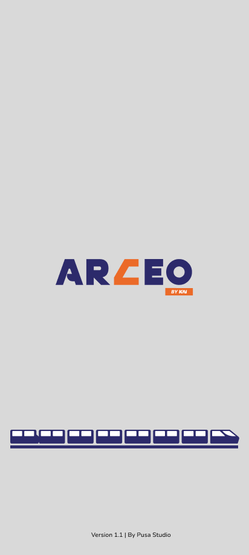
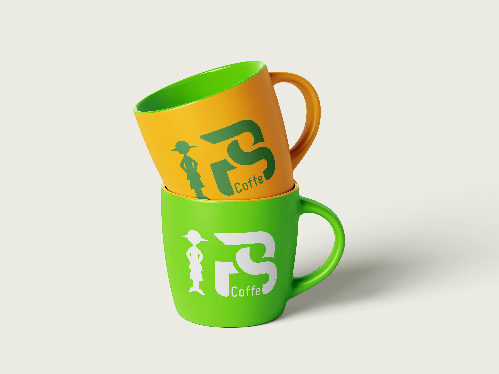
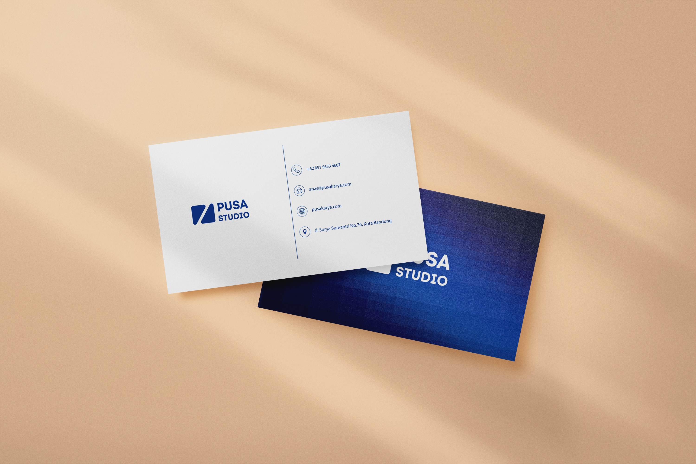
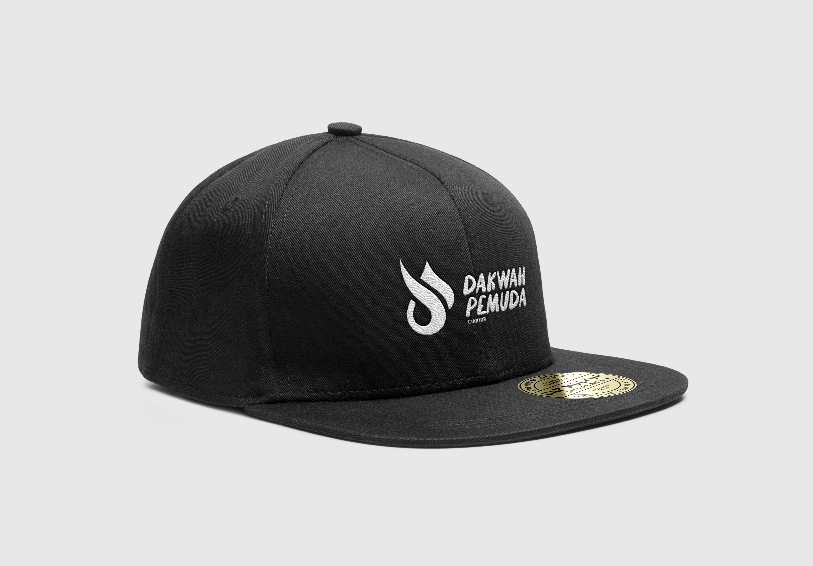

PROJECT / KARYA DESAIN
Berikut adalah dokumentasi beberapa karya desain grafis, visual identity, merchandise branding, dan eksplorasi antarmuka digital yang pernah saya buat selama studi dan pengalaman freelance di bidang desain:

ARCEO by KAI
Eksplorasi logo bernuansa modern minimalis dengan tipografi geometric bold dan aksen warna oranye kontras yang dinamis.

LPS Caffe - Mug Branding
Mockup visual dua varian warna mug keramik (kuning & hijau neon) dengan monogram logo unik untuk kedai kopi kekinian.

PT. Pusakarya - Kartu Nama
Desain kartu nama korporat profesional dengan finishing tekstur kertas mewah dan skema warna biru malam yang elegan.

Dakwah Pemuda Cianjur - Snapback
Mockup bordir logo monokrom pada topi snapback hitam premium untuk komunitas lokal yang berkarakter.